Lesson 5 · Part 1 · The model · 5 questions
Thinking and effort levels
Read first: Reading fast, writing slow
Modern models can write hidden scratch work before they answer. This "thinking" makes them much better at hard bugs and design, but every thinking token is written and billed as output, so the effort level is a dial between quality and cost that you should set per task.
The idea
Ask a senior colleague what port Postgres listens on, and they answer at once. Ask them why a payment is charged twice about once a week, and they reach for a whiteboard first. The whiteboard time is what makes the second answer good, and it is also what the second answer costs.
A model can do the same:
- Thinking is just more tokens. Before the answer, the model writes its reasoning into a separate thinking block: it tries ideas, checks them and backs out of dead ends. These tokens are decoded one at a time, like any other output (see Reading fast, writing slow).
- Later tokens can build on it. Each token is chosen from everything written before it. A model that has written "the retry fires before the commit" can use that step, instead of jumping straight to a guess in one go.
- The model decides when to think. With adaptive thinking, the model judges each request: no thinking for a simple question, a lot for a tricky bug. One session can have steps with and without thinking.
- Effort sets the default. The effort level is your hint for how readily and how deeply it thinks, from
lowtomax.

The rule to remember: thinking is output you pay for but mostly don't read. It is worth it when the problem needs reasoning, and wasted when it doesn't.
Up close
On Anthropic's API, effort is one field. Newer models think adaptively, and on some, such as Claude Opus 5.5, thinking can't be turned off, so effort is the main control:
resp = client.messages.create(
model=MODEL,
max_tokens=32000,
output_config={
"effort": "medium"
},
messages=history,
)
u = resp.usage
# all output, billed
print(u.output_tokens)
# the part spent thinking
d = u.output_tokens_details
print(d.thinking_tokens)What the docs say about each level:
| Level | Thinking |
|---|---|
low | Minimal; skips it on simple tasks. Suggested for subagents. |
medium | Moderate; may skip simple ones. Default on Opus 5.5 and Haiku 5.5. |
high | Thinks on most requests that benefit. Default on most other models. |
xhigh | More and deeper, for long agentic work. |
max | No limit on thinking length. |
Four details matter in practice:
- It is billed as output. Output costs 5 times the input price on Anthropic's current models. You often see only a short summary of the thinking, but you pay for all of it.
- Effort is a hint, not a budget. The hard cap is
max_tokens, and it covers thinking and answer together. - It shapes everything. Lower effort also means fewer, terser tool calls and shorter explanations.
- It is part of the prompt. Changing the effort level between requests breaks the prompt cache. Some newer models accept a per-message change (in beta) that keeps it.
Other providers have the same dial. OpenAI's API has a reasoning.effort setting, and its reasoning tokens are also hidden and billed as output.
In Claude Code, set effort with /effort, or --effort at launch. Writing ultrathink in a prompt asks for deeper reasoning on that turn only. A subagent can have its own level in its definition file:
---
name: file-finder
description: Finds files by name
or content. Returns paths only.
tools: Grep, Glob
effort: low
---Worked example
Claude Code's docs suggest levels by kind of work. A sensible starting point for a product team:
| Task | Effort |
|---|---|
| Rename a field, fix lint, find files | low |
| A feature with a clear spec | medium |
| A bug in old code, edge cases likely | high |
| A race in the payment saga, a schema design | xhigh |
| A long hunt you leave running, such as a security review | max, after testing |
The docs warn that max "may show diminishing returns and is prone to overthinking". Level names aren't comparable across models either: high on one model isn't the same amount of thinking as high on another. Try two levels on a few of your own tasks and compare the result and thinking_tokens.
Your turn
Question 1 · ~2 min
You write a subagent that only searches the repo with grep and returns a list of matching files. Your main session runs at high. What effort should the subagent get?
Show answer
low. There is nothing to reason about: run the search, return the paths. Higher effort buys more thinking and more tool calls for no better list. Set effort: low in its definition. Without that, a subagent on the same model runs at your session's level, so it greps at high.
Question 2 · ~2 min
The response shows a thinking summary of about 150 tokens and a 200-token answer. But usage.output_tokens says 2,400. Are you being overcharged?
Show answer
No. The summary is only a view of the thinking. You are billed for the full thinking the model actually wrote, plus the answer. output_tokens_details.thinking_tokens shows how much of the 2,400 was thinking.
Question 3 · ~2 min
Your team sets effort to max for every agent job in CI: renames, changelog updates, lint fixes and real bug fixes. The monthly bill doubles, but the renames and lint fixes look exactly the same. Why?
Show answer
You paid for thinking that easy jobs didn't need. Thinking is output, the most expensive token, and max removes the limit on it. Higher effort can also mean more tool calls. A rename has one right answer, so extra reasoning can't improve it. Set a lower default and raise effort only for the jobs where it changes the result.
Question 4 · ~3 min
You move a tool to a model that thinks adaptively. You keep max_tokens=1000, which was plenty for its short answers before. Now hard requests sometimes come back with stop_reason: "max_tokens" and little or no answer. Why?
Hint
max_tokens count?Show answer
Thinking counts toward max_tokens. On hard requests the model spends most of the 1,000 tokens thinking and runs out before the answer. Raise max_tokens if those requests need the reasoning, or lower the effort if they were overthought.
Question 5 · ~3 min
Stretch: to save money, your harness changes the top-level effort on every step of a long session: high when planning, low when reading tool results. The bill goes up. Why?
Hint
Show answer
Each change breaks the prompt cache. The effort level is rendered into the prompt, so every switch makes the model re-read the whole conversation at full price. Keep one level per session. Adaptive thinking often skips thinking anyway on steps that only process tool results. If you must vary it, use a per-message effort change on a model that supports it, which keeps the cache.
Interesting fact: One sentence, four times the score
In May 2022, Takeshi Kojima and colleagues from the University of Tokyo and Google published "Large Language Models are Zero-Shot Reasoners" (NeurIPS 2022). They added one sentence to the start of the model's answer: "Let's think step by step." On MultiArith, a set of school maths word problems, the accuracy of OpenAI's text-davinci-002 jumped from 17.7% to 78.7%. On the harder GSM8K it went from 10.4% to 40.7%. They tried 16 different trigger sentences. "Let's think step by step." was the best. "Don't think. Just feel." scored 18.8%, and "Abrakadabra!" 15.5%, no better than nothing. Today's thinking models are trained to write that step-by-step work on their own, and the effort level steers how much of it they write.
Facts checked: November 2026 (Anthropic API docs: effort, steering thinking, pricing; Claude Code docs: model configuration, subagents; OpenAI reasoning guide; Kojima et al., 2022).
Answers
- Question 1
low. There is nothing to reason about: run the search, return the paths. Higher effort buys more thinking and more tool calls for no better list. Seteffort: lowin its definition. Without that, a subagent on the same model runs at your session's level, so it greps athigh. - Question 2
No. The summary is only a view of the thinking. You are billed for the full thinking the model actually wrote, plus the answer.
output_tokens_details.thinking_tokensshows how much of the 2,400 was thinking. - Question 3
You paid for thinking that easy jobs didn't need. Thinking is output, the most expensive token, and
maxremoves the limit on it. Higher effort can also mean more tool calls. A rename has one right answer, so extra reasoning can't improve it. Set a lower default and raise effort only for the jobs where it changes the result. - Question 4
Thinking counts toward
max_tokens. On hard requests the model spends most of the 1,000 tokens thinking and runs out before the answer. Raisemax_tokensif those requests need the reasoning, or lower the effort if they were overthought. - Question 5
Each change breaks the prompt cache. The effort level is rendered into the prompt, so every switch makes the model re-read the whole conversation at full price. Keep one level per session. Adaptive thinking often skips thinking anyway on steps that only process tool results. If you must vary it, use a per-message effort change on a model that supports it, which keeps the cache.